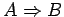
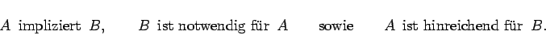

Aussagenverbindungen
Die Aussagenlogik untersucht den Wahrheitswert von Aussagenverbindungen in Abhängigkeit von den Wahrheitswerten der einzelnen Aussagen. Dabei werden ausschließlich extensionale Aussagenverbindungen betrachtet, d.h., der Wahrheitswert der Aussagenverbindung hängt nur von den Wahrheitswerten der Teilaussagen und den verbindenden Junktoren ab. Dabei wird der Wahrheitswert der Verbindung durch die klassischen Junktoren
bestimmt. Dabei ist das ,,logische oder`` immer als ,,einschließendes oder`` zu verstehen. Im Falle der Implikation sind für  auch die folgenden Sprechweisen üblich:
